Climate-Driven Vulnerability Assessment of Hamilton’s Urban Forest:
A Ward-Level Resilience Framework for 2030, 2050, and 2080
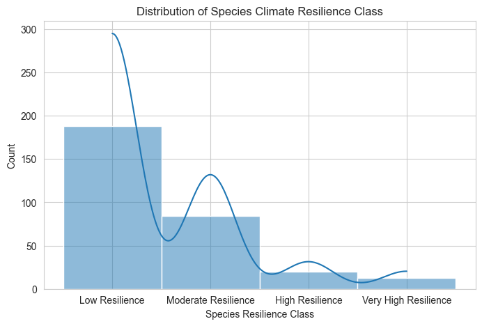
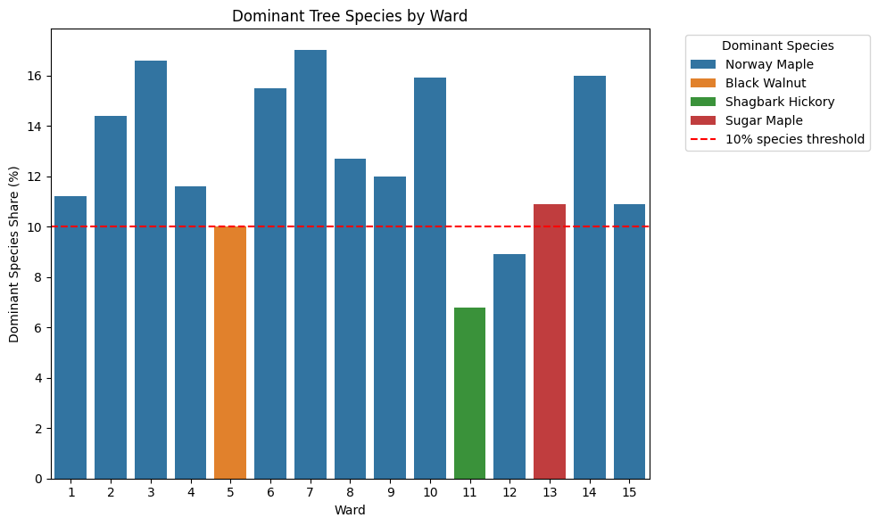
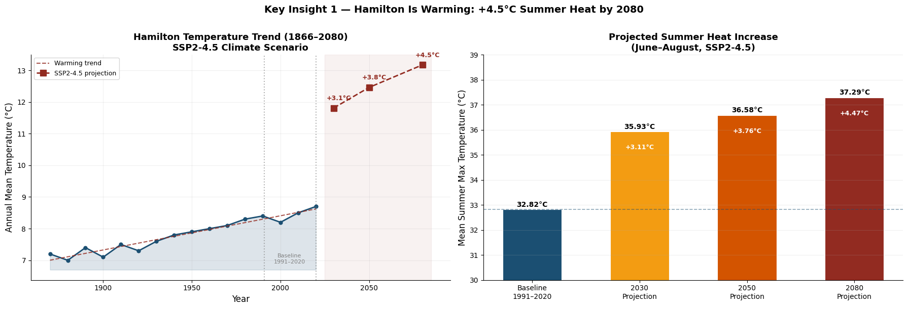

| Vulnerability Score = Exposure + Sensitivity − Adaptive Capacity (IPCC AR5 Vulnerability Equation) |
|||
|---|---|---|---|
| Exposure | How much stress the ward and trees will face | Extreme Heat Intensity (ΔTXx) daily maximum temperature during summer. Heat index = Σ (P_category × ISA weight) |
City Level Ward-Level |
| Sensitivity (1 − Resilience score) |
Tree susceptibility to climate stress | Heat (AHS Temp >30’C), Hydroclimate (Drought + Saturated Soil Tolerance), Pollution Tolerance, Climate Suitability | Species-Level |
| Adaptive Capacity | Ecosystem ability to cope with stress | DBH. Larger trees offer greater resistance through stronger root systems. | Individual Tree Level |
| *All the data used in this analysis are well-established and widely recognized government-affiliated sources.* | |||
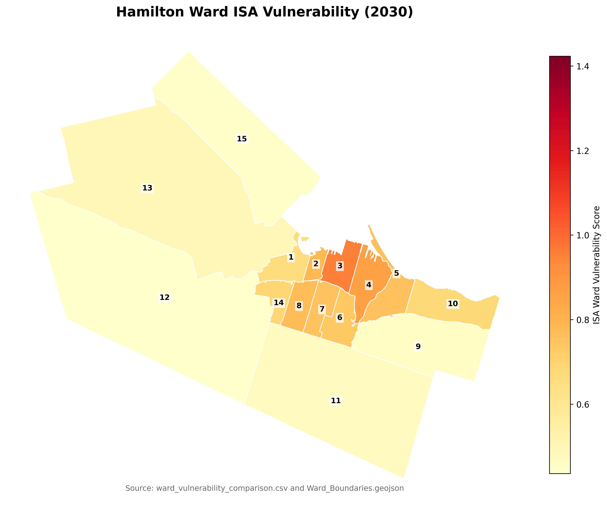
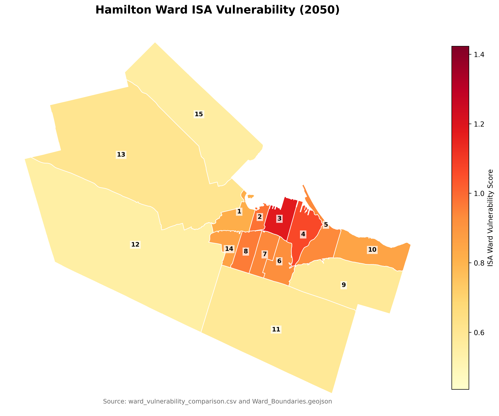
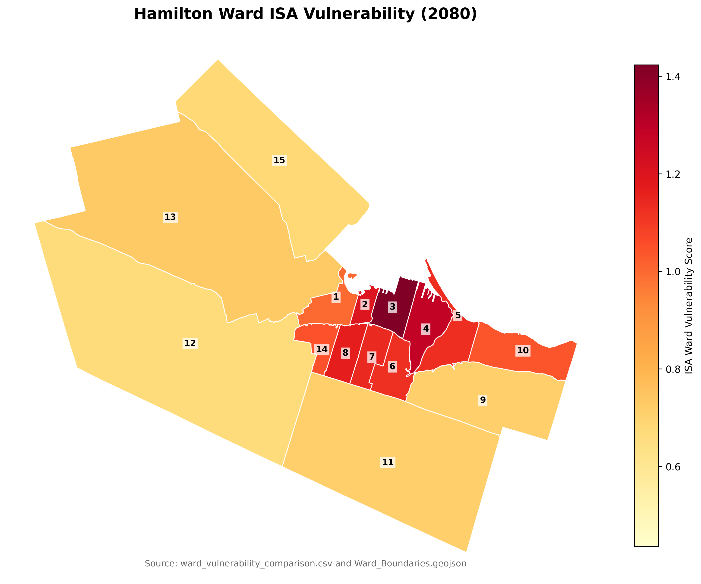
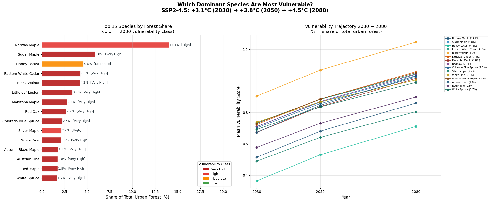
[Built Environment Stress + Ward Vulnerability Score + Low Diversity Pressure + Biodiversity Pressure]
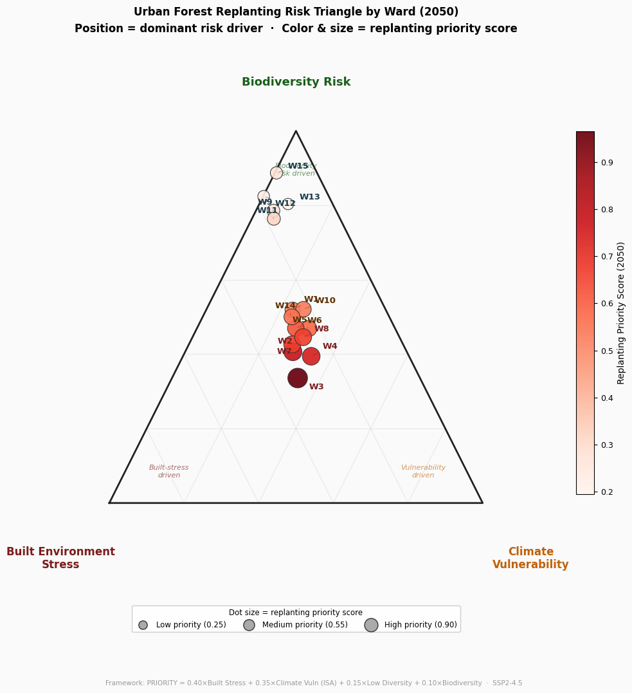
Each ward’s position shows which risk driver dominates its 2050 replanting needs.
Wards 9, 11, 12, 13, and 15 cluster toward the Biodiversity Risk corner, reflecting strong monoculture pressure.
High‑priority wards 2, 3, 4, and 7 fall in the mixed‑driver zone, where built environment stress and climate vulnerability amplify biodiversity risk.
Ward 3 ranks highest overall (0.966), driven by extreme built stress and ISA‑related heat exposure.
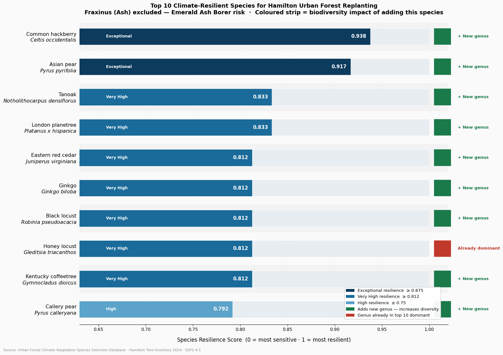
The chart shows the most climate-resilient tree species for replanting in vulnerable areas. Common hackberry (0.938) and Asian pear (0.917) have exceptional resilience.
Nine of ten recommended species introduce new genera, addressing Hamilton’s Acer monoculture risk. Fraxinus (ash) is excluded due to Emerald Ash Borer risk.
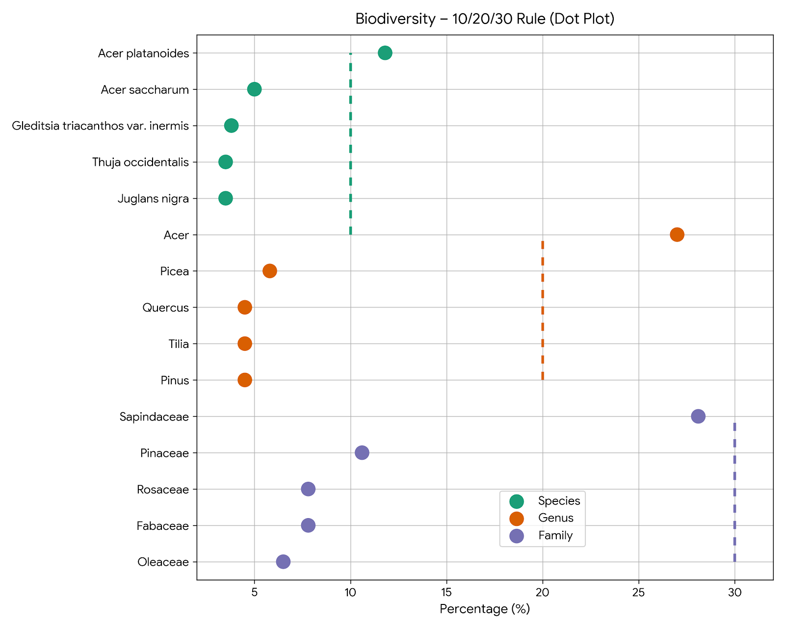
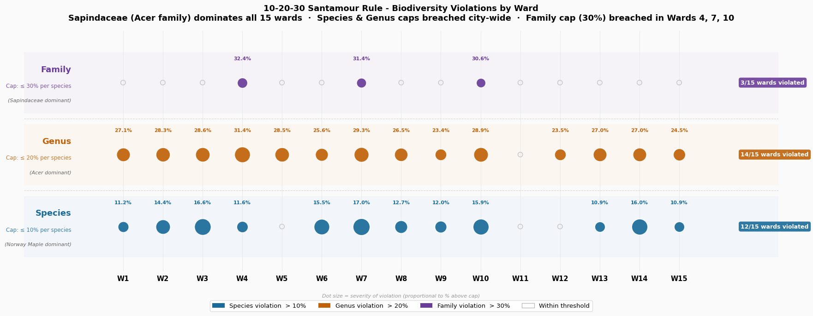
Guideline recommends that no more than 10% species, 20% genus, and 30% family dominance should occur in an urban forest.
Points located to the right of the dashed threshold lines indicate that the 10/20/30 biodiversity guideline is exceeded.
City-Level: Acer platanoides Species and Acer Genus exceed the recommended limit. Sapindaceae Family is approaching the recommended limit. This family may soon exceed the recommended proportion if it continues increasing.
Ward 4 is the only ward with two species violating the rule.
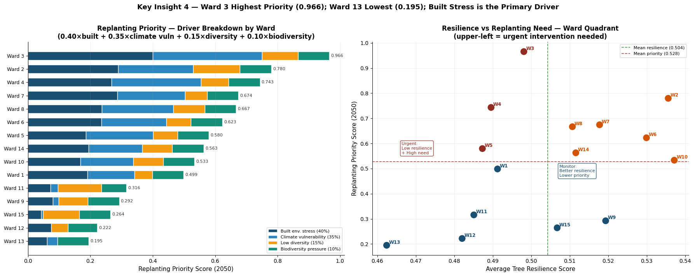
Highest vulnerability:
Prioritize climate adaptation in high-risk wards.
Ward 3 leads all three horizons driven by the city’s highest ISA heat index (1.0 normalized)
Biodiversity risk:
Reduce dependence on dominant maple species.
Norway Maple dominates city-wide at 11.9%, the only species exceeding the 10% Santamour cap. Acer genus exceeds the 20% genus cap in 14 of 15 wards (Ward 4: 31%, Ward 3 & 7: 29%)
Safest wards:
Wards 9, 11, 12, 13, 15: lowest vulnerability, lowest built share, lowest road stress
Ash risk: 9,170 Fraxinus trees represent 3.3% of the inventory. Identified for exclusion from replanting due to Emerald Ash Borer.